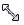
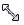

|
クリックする ⇒ |

|
|
クリックする ⇒ |
|

拡大・縮小
- (1) 描画領域で曲線を選択する
クリックする
⇒
- (2) 枠の角に移動し、カーソルが
 やになったらクリックする
やになったらクリックする
- (3) クリッしたまま移動する → 曲線の大きさが変わる
- (4) 選択を解除する
点の追加
- (1) 描画領域で折れ線を選択する
クリックする
⇒ - (2) 曲線上や枠の角移に動し、カーソルが
 、やになったら右クリックする → メニューが表示される
、やになったら右クリックする → メニューが表示される
右クリックする
⇒ - (3) メニューから
点の追加 をクリックする → カーソルがになる - (4) 追加したい線に近づけてクリックする → 通過点が追加される
クリックする
⇒ - (5) 追加した通過点を移動できる
- (6) 選択を解除する
点の削除
- (1) 描画領域で折れ線を選択する
クリックする
⇒ - (2) 曲線上、または枠に移動し、カーソルが、やになったら右クリックする → メニューが表示される
右クリックする
⇒ - (3) メニューから
点の削除 をクリックする → カーソルがになる - (4) 削除したい通過点に近づけてクリックする → 通過点が削除される
クリックする
⇒ - (5) 選択を解除する